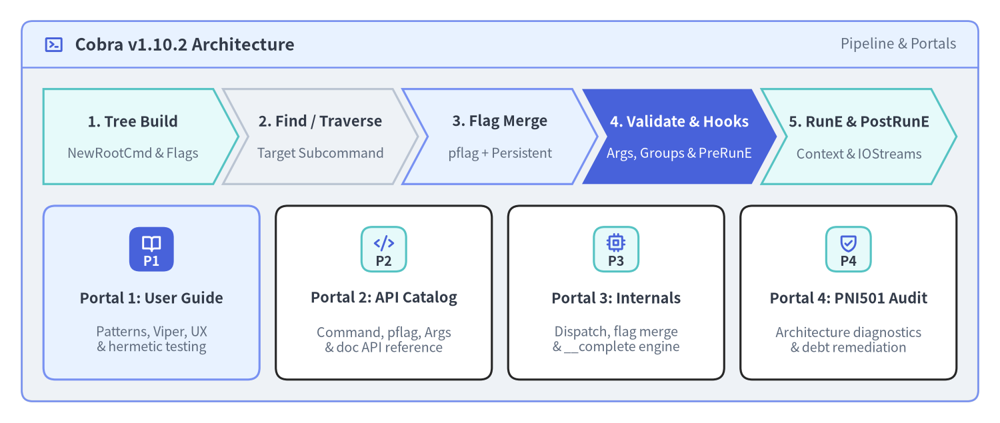
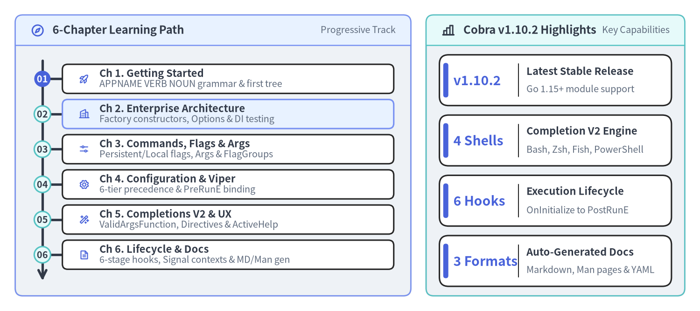

Cobra v1.10.2 — Practical User Guide
Cobra (github.com/spf13/cobra v1.10.2) is the industry-standard Go library for building modern, hierarchical command-line interfaces (APPNAME VERB NOUN --ADJECTIVE) and POSIX/GNU-compliant flag sets (spf13/pflag). Powering mission-critical cloud-native tooling including Kubernetes (kubectl), GitHub CLI (gh), Docker CLI, Helm, and Hugo, this unofficial bilingual guide walks systematically from your first subcommand tree to production-grade dependency injection, 6-tier Viper configuration, dynamic Shell Completion V2, and hermetic in-memory test suites.

Source Code
from drawlib.canvas import save, setup
from drawlib.icons import phosphor
from drawlib.smartarts import CardList, ChevronProcess, Panel
from drawlib.styles import Styles
setup(width=184, height=78, dpi=150)
outer = Panel(
"Cobra v1.10.2 Architecture",
"Pipeline & Portals",
style=Styles.Neutral.patch(shape_r=2.0),
header_style=Styles.PrimaryNeutral.patch(shape_line_width=1.2),
text_style=Styles.DarkBold.patch(text_size=12.0),
description_style=Styles.Muted.patch(text_size=10.0),
icon=phosphor.terminal_window,
icon_style=Styles.PrimaryBold,
header_variant="filled",
header_height=8.5,
)
outer.draw((4.0, 4.0), width=176.0, height=70.0)
proc = ChevronProcess(
style=Styles.White,
text_style=Styles.DarkBold.patch(text_size=10.5),
description_style=Styles.Muted.patch(text_size=9.5),
corner_angle=62.0,
spacing=1.8,
flat_left_end=True,
)
proc.add("1. Tree Build", description="NewRootCmd & Flags", style=Styles.SecondaryNeutral)
proc.add("2. Find / Traverse", description="Target Subcommand", style=Styles.Neutral)
proc.add("3. Flag Merge", description="pflag + Persistent", style=Styles.PrimaryNeutral)
proc.add(
"4. Validate & Hooks",
description="Args, Groups & PreRunE",
style=Styles.PrimaryFlat,
text_style=Styles.WhiteBold.patch(text_size=10.5),
description_style=Styles.White.patch(text_size=9.5),
)
proc.add("5. RunE & PostRunE", description="Context & IOStreams", style=Styles.SecondaryNeutral)
proc.draw(xy=(8.0, 44.0), width=168.0, height=17.5)
portals = CardList(
style=Styles.White,
text_style=Styles.DarkBold.patch(text_size=10.5),
description_style=Styles.Muted.patch(text_size=9.5),
badge_shape="rounded_rect",
badge_style=Styles.SecondaryNeutral,
badge_text_style=Styles.DarkBold.patch(text_size=9.5),
icon_style=Styles.PrimaryBold,
direction="horizontal",
spacing=3.0,
)
portals.add(
"Portal 1: User Guide",
"Patterns, Viper, UX\n& hermetic testing",
badge_text="P1",
icon=phosphor.book_open,
style=Styles.PrimaryNeutral,
badge_style=Styles.PrimaryFlat,
badge_text_style=Styles.WhiteBold.patch(text_size=9.5),
icon_style=Styles.WhiteBold,
)
portals.add(
"Portal 2: API Catalog",
"Command, pflag, Args\n& doc API reference",
badge_text="P2",
icon=phosphor.code,
)
portals.add(
"Portal 3: Internals",
"Dispatch, flag merge\n& __complete engine",
badge_text="P3",
icon=phosphor.cpu,
)
portals.add(
"Portal 4: PNI501 Audit",
"Architecture diagnostics\n& debt remediation",
badge_text="P4",
icon=phosphor.shield_check,
)
portals.draw(xy=(8.0, 8.0), width=168.0, height=32.0)
save()
1. The 4-Portal Cobra v1.10.2 Documentation Suite
This site is Portal 1 (User Guide) of a four-portal technical documentation suite engineered for Go developers, platform engineers, and CLI architects working with spf13/cobra v1.10.2:
| Portal | Scope & Audience | Primary Topics | URL |
|---|---|---|---|
| 1. User Guide (Current) | Application engineers & CLI authors | CLI design grammar, Constructor/Options DI, pflag inheritance, Viper precedence, Shell Completion V2, Lifecycle hooks |
cobra.drawlib.com/user_guide/ |
| 2. API Reference | Package consumers & SDK builders | Exact signatures, struct fields, Posix/GNU pflag bindings, PositionalArgs validators, ShellCompDirective bitmasks, cobra/doc |
cobra.drawlib.com/api/ |
| 3. Internal Architecture | Core contributors & framework maintainers | Command struct anatomy, Find() vs Traverse(), mergePersistentFlags() resolution, __complete protocol, text/template engine |
cobra.drawlib.com/architecture/ |
| 4. PNI501 Audit Report | Staff engineers & security/quality reviewers | Cyclomatic complexity hotspots, global state concurrency hazards, pflag coupling analysis, v2 evolution recommendations |
cobra.drawlib.com/pni501/ |
2. Learning Path & Guide Navigation
The User Guide is organized into 6 progressive chapters (10 focused pages) that take you from fundamental POSIX/GNU command grammar to enterprise-scale multi-package CLI engineering:

Source Code
from drawlib.canvas import save, setup
from drawlib.icons import phosphor
from drawlib.smartarts import KpiCards, Panel, Roadmap
from drawlib.styles import Styles
setup(width=184, height=82, dpi=150)
left_panel = Panel(
"6-Chapter Learning Path",
"Progressive Track",
style=Styles.Neutral.patch(shape_r=2.0),
header_style=Styles.PrimaryNeutral.patch(shape_line_width=1.2),
text_style=Styles.DarkBold.patch(text_size=11.5),
description_style=Styles.Muted.patch(text_size=9.5),
icon=phosphor.compass,
icon_style=Styles.PrimaryBold,
header_variant="filled",
header_height=8.0,
)
left_panel.draw((4.0, 4.0), width=104.0, height=74.0)
l_xy, l_w, l_h = left_panel.get_content_box((4.0, 4.0), width=104.0, height=74.0, padding=(3.5, 2.5))
rm = Roadmap(
style=Styles.White,
text_style=Styles.DarkBold.patch(text_size=10.5),
description_style=Styles.Muted.patch(text_size=9.5),
spine_style=Styles.DarkBold,
badge_style=Styles.SecondaryNeutral,
badge_text_style=Styles.DarkBold.patch(text_size=9.5),
icon_style=Styles.PrimaryBold,
direction="vertical",
spacing=1.8,
)
rm.add(
"Ch 1. Getting Started",
"APPNAME VERB NOUN grammar & first tree",
badge_text="01",
icon=phosphor.rocket_launch,
badge_style=Styles.PrimaryFlat,
badge_text_style=Styles.WhiteBold.patch(text_size=9.5),
)
rm.add(
"Ch 2. Enterprise Architecture",
"Factory constructors, Options & DI testing",
badge_text="02",
icon=phosphor.buildings,
style=Styles.PrimaryNeutral,
)
rm.add(
"Ch 3. Commands, Flags & Args",
"Persistent/Local flags, Args & FlagGroups",
badge_text="03",
icon=phosphor.sliders_horizontal,
)
rm.add(
"Ch 4. Configuration & Viper",
"6-tier precedence & PreRunE binding",
badge_text="04",
icon=phosphor.gear,
)
rm.add(
"Ch 5. Completions V2 & UX",
"ValidArgsFunction, Directives & ActiveHelp",
badge_text="05",
icon=phosphor.magic_wand,
)
rm.add(
"Ch 6. Lifecycle & Docs",
"6-stage hooks, Signal contexts & MD/Man gen",
badge_text="06",
icon=phosphor.file_text,
)
rm.draw(l_xy, width=l_w, height=l_h)
right_panel = Panel(
"Cobra v1.10.2 Highlights",
"Key Capabilities",
style=Styles.Neutral.patch(shape_r=2.0),
header_style=Styles.SecondaryNeutral.patch(shape_line_width=1.2),
text_style=Styles.DarkBold.patch(text_size=11.5),
description_style=Styles.Muted.patch(text_size=9.5),
icon=phosphor.chart_bar,
icon_style=Styles.DarkBold,
header_variant="filled",
header_height=8.0,
)
right_panel.draw((112.0, 4.0), width=68.0, height=74.0)
r_xy, r_w, r_h = right_panel.get_content_box((112.0, 4.0), width=68.0, height=74.0, padding=(3.5, 2.5))
kpi = KpiCards(
style=Styles.White,
metric_style=Styles.PrimaryBold.patch(text_size=13.5),
text_style=Styles.DarkBold.patch(text_size=10.5),
description_style=Styles.Muted.patch(text_size=9.5),
accent_style=Styles.PrimaryFlat,
accent_position="left_pill",
metric_layout="left_column",
metric_width_ratio=0.34,
spacing=2.5,
)
kpi.add("v1.10.2", "Latest Stable Release", "Go 1.15+ module support")
kpi.add("4 Shells", "Completion V2 Engine", "Bash, Zsh, Fish, PowerShell")
kpi.add("6 Hooks", "Execution Lifecycle", "OnInitialize to PostRunE")
kpi.add("3 Formats", "Auto-Generated Docs", "Markdown, Man pages & YAML")
kpi.draw(r_xy, width=r_w, height=r_h, columns=1)
save()
Complete Chapter Directory
| Chapter | Guide Page | Key Concepts & Production Patterns |
|---|---|---|
| 1. Introduction & Quickstart | Why Cobra & CLI Design Philosophy | APPNAME VERB NOUN --ADJECTIVE grammar, stdlib flag vs cobra + pflag, Command / Args / Flags primitives |
| 1. Introduction & Quickstart | Quickstart & First Subcommand Tree | Module setup (v1.10.2), building rootCmd, versionCmd, and serveCmd, wiring RunE and AddCommand() |
| 2. Enterprise CLI Architecture | Factory Pattern, Options & DI | Eliminating global init() state, NewCmd*(streams) constructors, Complete() -> Validate() -> Run() Options pattern |
| 2. Enterprise CLI Architecture | Multi-Package Layout & Hermetic Testing | Domain-driven cmd/ packages, SetOut/SetErr/SetIn/SetArgs, sub-millisecond ExecuteC() table tests |
| 3. Commands, Flags & Arguments | Persistent, Local & Inherited Flags | PersistentFlags() vs Flags(), typed pflag bindings, TraverseChildren, SetGlobalNormalizationFunc, .Changed() |
| 3. Commands, Flags & Arguments | Positional Args & Flag Group Constraints | Built-in ExactArgs/RangeArgs/MatchAll, custom validators, MarkFlagsMutuallyExclusive, MarkFlagsRequiredTogether |
| 4. Configuration & Viper | 6-Tier Config Precedence & Viper Binding | Merging CLI flags, env vars, config files, and defaults cleanly inside PersistentPreRunE without global collisions |
| 5. Shell Completions & UX | Shell Completion V2 & Directives | Dynamic Go completions (ValidArgsFunction, RegisterFlagCompletionFunc), __complete protocol, ShellCompDirective bitmasks |
| 5. Shell Completions & UX | ActiveHelp, Suggestions & Help Templates | AppendActiveHelp, Levenshtein distance typo suggestions (SuggestFor), AddGroup, custom usage/help templates |
| 6. Execution, Lifecycle & Docs | Lifecycle Hooks, Errors & Context Signals | EnableTraverseRunHooks, SilenceUsage vs SilenceErrors, ExecuteContext with signal.NotifyContext |
| 6. Execution, Lifecycle & Docs | Doc Generation (MD/Man/YAML) & Releases | cobra/doc (GenMarkdownTree, GenManTree, GenYamlTree), DisableAutoGenTag, CI/CD & GoReleaser automation |
3. Architecture At a Glance: Modern Constructor Pattern
While early Cobra generators encouraged package-level global var rootCmd = &cobra.Command{...} singletons wired via func init(), modern cloud-native Go CLIs (kubectl, gh, helm, docker) construct fresh command trees via factory functions. This guarantees state isolation across parallel go test runs and makes dependency injection explicit:
package cli
import (
"fmt"
"io"
"github.com/spf13/cobra"
)
// IOStreams abstracts standard OS streams for hermetic unit testing.
type IOStreams struct {
In io.Reader
Out io.Writer
ErrOut io.Writer
}
// NewRootCmd constructs an isolated root Command tree on every invocation.
func NewRootCmd(streams IOStreams, version string) *cobra.Command {
var env string
cmd := &cobra.Command{
Use: "cloudctl",
Short: "Unified control plane CLI for cloud workloads",
Version: version,
SilenceUsage: true, // Do not dump usage text on runtime business errors
SilenceErrors: true, // Let main() format and log returned errors once
}
// Bind Command I/O to the injected streams
cmd.SetIn(streams.In)
cmd.SetOut(streams.Out)
cmd.SetErr(streams.ErrOut)
// Persistent flags cascade automatically to all descendant subcommands
cmd.PersistentFlags().StringVarP(&env, "env", "e", "staging", "Target deployment environment")
cmd.AddCommand(newStatusCmd(&env))
return cmd
}
func newStatusCmd(env *string) *cobra.Command {
return &cobra.Command{
Use: "status [service]",
Short: "Inspect live health status of a service",
Args: cobra.MaximumNArgs(1),
RunE: func(cmd *cobra.Command, args []string) error {
target := "all-services"
if len(args) == 1 {
target = args[0]
}
cmd.Printf("Checking %s in environment %q...\n", target, *env)
return nil
},
}
}
Core Capabilities Covered in This Guide
- Hierarchical Command Routing (
Find&Traverse): Arbitrary nesting of subcommands with alias resolution, prefix matching (EnablePrefixMatching), and command grouping (AddGroup). - POSIX/GNU Flag Compliance (
spf13/pflag): Shorthand flag stacking (-aux),--flag=valueor--flag valuesyntax,NoOptDefVal,--pass-through termination, and co-occurrence constraints (MarkFlagsMutuallyExclusive,MarkFlagsOneRequired,MarkFlagsRequiredTogether). - Dynamic Shell Completion V2 (
__complete): Native completion logic written in pure Go (ValidArgsFunction) rather than custom Bash scripts, emitting rich descriptions (cobra.CompletionWithDesc) and inline hints (cobra.AppendActiveHelp) across Bash, Zsh, Fish, and PowerShell. - Deterministic Lifecycle & Signal Propagation: Six ordered execution hooks (
OnInitialize,PersistentPreRunE,PreRunE,RunE,PostRunE,PersistentPostRunE,OnFinalize) with nativecontext.Contextpropagation (ExecuteContext).
Next Steps
Start with Why Cobra & CLI Design Philosophy to explore the APPNAME VERB NOUN --ADJECTIVE grammar and core primitives, or jump directly to Quickstart & First Subcommand Tree to build and run your first multi-command CLI.